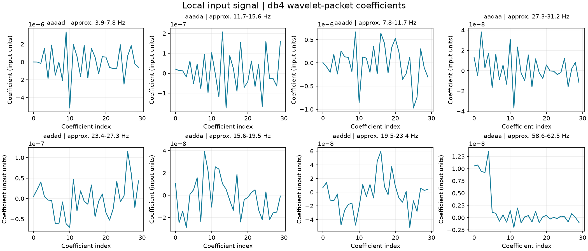
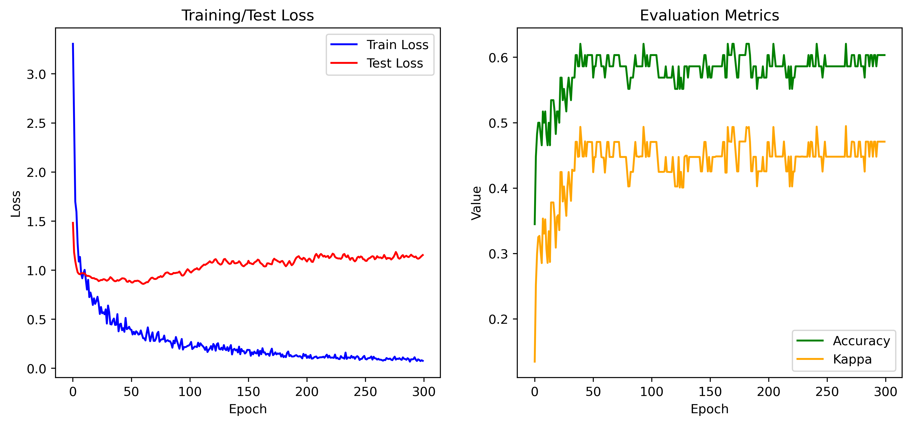

Motor Imagery BCI
Making EEG features visible. Wavelet-packet feature extraction and visualization for a collaborative four-class motor-imagery classification workflow.

- Period
- Apr – May 2025
- My role
- Wavelet-packet feature extraction & visualization lead
- Validation
- Offline EEG experiments
The project
The project explored how EEG recorded during imagined movement can be represented and classified. Using BCI Competition IV 2a, the team investigated left-hand, right-hand, feet and tongue imagery, alongside model experiments with DeepConvNet, EEGNet, FBCNet and EEG-Conformer.
My contribution
- Led the wavelet-packet feature extraction and visualization work in Python and PyWavelets.
- Produced a fixed-size feature representation and coefficient plots for inspecting the extraction process.
- Contributed to the collaborative preprocessing, WPD/CSP classification workflow and experiment analysis.
Engineering approach
Prepare the EEG
Load labeled GDF recordings with MNE, filter at 7–35 Hz, exclude EOG channels and extract cue-aligned epochs.
Extract wavelet-packet features
Apply level-5 Daubechies 4 decomposition. Eight selected nodes contribute 30 coefficients each, producing a tensor shaped (8, trials, channels, 30). Frequency labels account for the difference between natural tree order and frequency order.
Apply spatial filtering
Fit four CSP components per node using the training split and standardize the resulting 32 features.
Train and inspect
Train a PyTorch MLP for the four imagery classes and record held-out metrics. The historical protocol used ten repeated random 80/20 splits within a recording.
Results & validation
The curated repository brings together the feature module, selected plots, the original team presentation and saved classification records. The feature implementation was checked against the original scripts, and the classifier completed a short execution check on A01T data.
Historical records lack complete run metadata. The saved training plot is evidence of an original experiment, not a newly reproduced cross-session benchmark. This was offline signal analysis, without real-time device control.
Project gallery
Original project figures. Select an image to view it at full size.

Source & tools
Explore the project files, technical documentation and supporting materials.